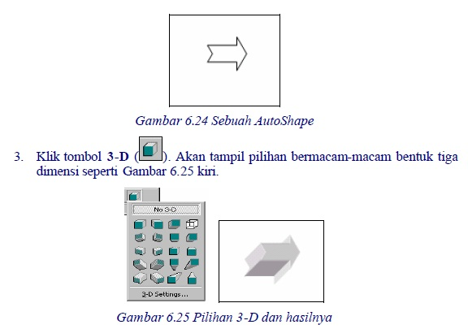

4. Menambah Efek
FrontPage XP menyediakan beberapa efek yang bisa kita gunakan untuk membuat
tampilan objek menjadi lebih menarik, bahkan lebih profesional.
Efek tersebut antara lain efek tiga dimensi dalam berbagai variasinya dan efek
bayangan.
4.1 Efek Tiga Dimensi Objek
Salah satu kelebihan FrontPage XP adalah kemampuannya menghasilkan efek tiga
dimensi (3D). Efek ini tentu saja sebagai kelengkapan dari objek, seperti gambar,
text box, AutoShape dan seterusnya. Untuk memakai fasilitas efek 3D, gunakan
tombol 3D Style pada toolbar Drawing.
Gambar 6.22 Tombol 3D Style pada toolbar Drawing
Jika Anda tekan tombol 3D Style, muncul koleksi icon 3D yang bisa kita
manfaatkan. Gambar 6.23 kiri.
Gambar 6.23 Koleksi tombol 3D dan 3-D Settings
Kalau Anda klik pilihan 3-D Settings…, muncul toolbar 3-D Settings….
Keterangan masing-masing tombol 3-D Settings bisa Anda simak pada Tabel 6.3.
Cara pemakaian tombol-tombol efek 3D adalah:
1. Pasangkan objek atau AutoShape ke halaman.
2. Klik objek yang akan ditambah dengan efek tiga dimensi tersebut, misalnya
sebuah AutoShape seperti Gambar 6.24.

Gambar 6.25 Pilihan 3-D dan hasilnya
Dari pilihan yang ada klik salah satunya, hasilnya adalah seperti Gambar 6.25 kanan.
4.2 Efek Bayangan Objek
Untuk menambahkan bayangan kepada sebuah objek, ikutilah langkah-langkah
berikut ini:
1. Pilihlah objek yang akan diberikan bayangan, misalnya seperti berikut ini:
Gambar 6.26 AutoShape terpilih
2. Klik salah satu alat bantu Shadow pada toolbar Drawing. Contoh hasilnya
seperti berikut ini:
Gambar 6.27 Objek sesudah memiliki bayangan
3. Klik tipe bayangan yang akan Anda gunakan. Bayangan tersebut akan
ditampilkan pada objek.
4. Untuk meningkatkan tampilan bayangan, klik alat bantu Shadow dan pilih
Shadow Settings , kemudian gunakan toolbar Shadow yang tampill, seperti
Gambar 6.28.
Gambar 6.28 Toolbar Shadow Settings
Keterangan masing-masing tombol pada Toolbar Shadow Settings bisa Anda simak
pada Tabel 6.4.
Tabel 6.4 Tombol pada toolbar Shadow Settings
Copyright © Herlan Lesmana
Created with the Freeware Edition of HelpNDoc: Free HTML Help documentation generator